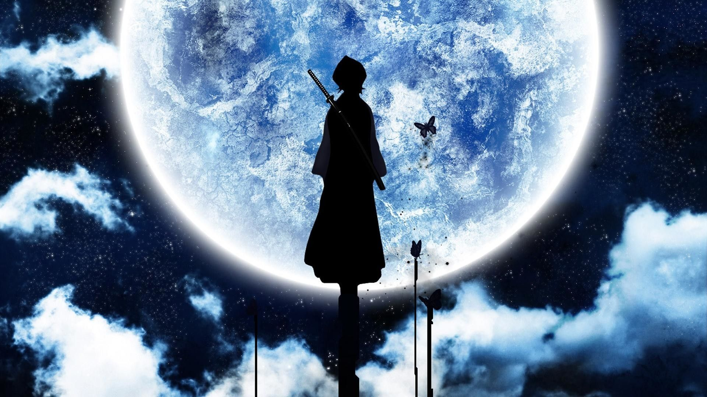

После взрыва слоя гидрата метана немногочисленные оставшиеся в живых люди вынуждены жить под куполами городов, разбросанных по негостеприимной и засушливой планете. Они живут в полностью контролируемом обществе и обслуживаются Авторейвами (англ. AutoLive - автоматическая жизнь) - андроидами, запрограммированными на служение людям. В городе Ромдо инспектор Рил Мэйер, внучка правящего регента, расследует дело об Авторейве, который сошел с ума после заражения загадочным вирусом "Когито". При выяснении обстоятельств дела она сталкивается с существом, которое называют Прокси. В то же время в городе иммигрант из Москвы по имени Винсент Лоу скрывается от закона, обвиненный в участии в преступлениях, связанных вирусом "Когито". Вместе они, прихватив с собой милую девочку-авторейва Пино, отправляются в город-купол Москву, чтобы узнать тайну Прокси.
Мир Иллюзий стал своеобразной тюрьмой для представителей демонического рода. Многие адские твари, как сильные, так и слабые, оказались в заключении, но все время мечтали вырваться на свободу. Правда, всё оказывается не так просто: вернуться в мир может только один демон из всей этой когорты безумных и жестоких существ. Самый смертоносный, самый невероятный и сильный монстр должен сразить остальных. Только этот безжалостный демон получит свободу. Лис Тан Шуан - один из претендентов, однако у него море конкурентов. Он решает объединить силы с Цинь Хуай и Дай Янь, которые вместе смотрятся действительно могучей силой. Вскоре им предстоит столкнуться с невероятно сильным снежным демоном. Эта особа обладает невероятной способностью контроля мертвых тел павших демонов. Она уже сразила Юань Линь, монстра, ответственного за соблюдение порядка и правил в Иллюзорном мире. Теперь же именно Снежный демон является наиболее вероятным претендентом на выход из тюрьмы. Правда, объединившая усилия троица не готова просто так расстаться со своей свободой. Что же будет дальше?
Эта история случилась в начале XI века, когда викинги, безраздельно господствовавшие в северных морях, грабили побережья Франции и Англии. В эпоху, где оружие значило больше, нежели слова, маленький мальчик невольно оказывается косвенной причиной гибели своего отца. Повзрослев и став на путь воина, он жаждет честного поединка с убийцей отца – легендарным главарём отряда викингов-наемников, но возраст и отсутствие опыта не позволяют ему сделать это. Чтобы не упускать своего врага из виду, юноша вступает в его отряд и в награду за выполнение тяжелого боевого задания требует поединка с ним, но терпит поражение. Юноша продолжает прилагать все усилия, чтобы осуществить свою месть. Внезапно он оказывается вовлечён в куда более кровавое столкновение...
В этом мире два года пролетели как мгновение. Бывшие новички присоединились к рядам опытных синоби в ранге дзенин и тюнин. Все это время главные герои не сидели сложа руки – каждый из них подался в ученики к одному из прославленных Саннин – трех величественных ниндзя Конохи. Парень в оранжевых одеяниях, шаг за шагом постигая мудрость боевого мастерства, продолжил свое просвещение у эксцентричного, но мудрого Дзирайи. Сакура стала доверенным лицом и помощницей целительницы нового вождя деревни – мудрой Цунадэ. Ну а гордыня Саскэ, из-за которой он был изгнан из Кинохи, заставила вступить его в зловещий союз с Оротимару, причем каждый из них искренне верит, что использует другого, и конечно до определенной поры…
Когда Эдвард и Альфонс были совсем маленькими, их отец Хоэнхайм покинул дом. Мать в одиночку растила их, поощряя увлечение детей алхимией – наукой, которой Хоэнхайм посвятил свою жизнь. Алхимия казалась Эду и Алу практически всесильной: пользуясь ею, можно было преобразовывать одни предметы в другие и создавать новые. Были лишь два ограничения. Первое – закон равноценного обмена, гласивший, что для получения чего-либо нужно использовать что-то точно такого же объема. Второе – ни в коем случае нельзя даже пытаться создать человека. После того, как мать Эда и Ала умерла, они решили преступить главный запрет и воскресить ее. Эта попытка обернулась настоящей трагедией: в результате неудачного преобразования Ал потерял тело, а Эд – ногу и руку, ценой которой он вселил душу брата в огромные доспехи. Теперь перед ними стоит новая задача: любой ценой вернуть себе прежние тела и тем самым исправить свою ошибку. Ради этой цели Эд стал государственным алхимиком, несущим службу в армии Аместриса, родины Элриков. Братья пустились в долгую дорогу, на которой их ждет множество открытий.